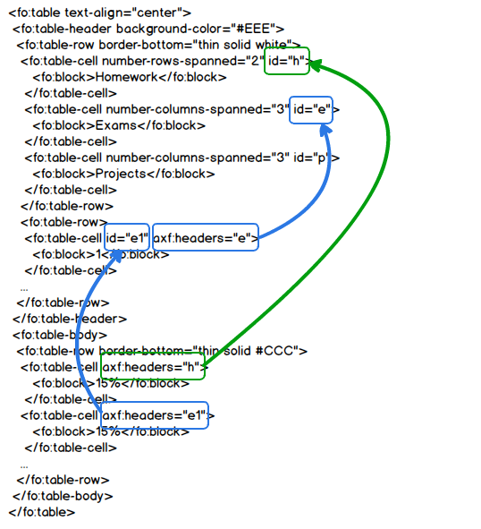
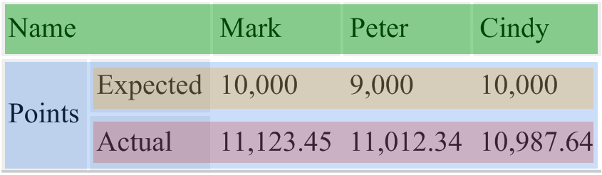
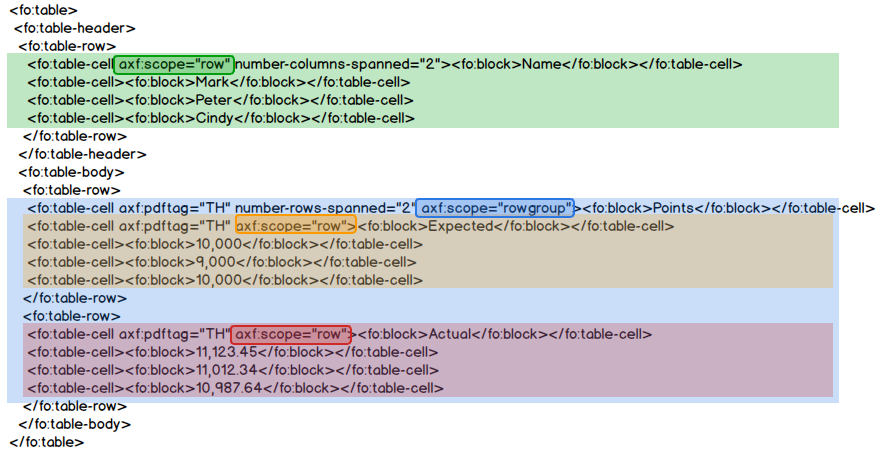

Antenna House Formatter provides two properties that you can use to provide information about the structure of a table: 'headers' and 'scope'. 'headers' associates a table body cell with its appropriate table header cell or cells. Conversely, 'scope' provides the association from a table header cell to the cells to which it applies. 'headers' and 'scope' can be used with PDF/UA or Tagged PDF output (PDF 1.5 or later). See 'headers' and 'scope' in the Online Manual for more information.
The following table uses the headers attribute to associate table cells with their header cells. You will not see any effect on the formatted table, but when you generate the PDF, a screen reader will be able to use the headers information.
| Homework | Exams | Projects | ||||
|---|---|---|---|---|---|---|
| 1 | 2 | Final | 1 | 2 | Final | |
| 15% | 15% | 15% | 20% | 10% | 10% | 15% |
The following figure uses arrows to show the headers associations in the table.
For example:
'headers' contains the IDs of one or more header cells associated with the current table cell.
The headers attribute contains the IDs of one or more header cells associated with the current table cell. Header cells can also have headers attributes to refer to their associated header cells. The header cells associated with a table body cell are the header cells referred to in its headers plus those in the headers of those cells, and so on.
The following figure shows some of the markup for the preceding example:
headers="h" on the <td> for "15%" in the first column refers to the ID of the <th> for "Homework".headers="e1" on the <td> for "15%" in the second column refers to the ID of the <th> for "1" and that headers="e" on that <th> refers to the ID of the <th> for "Exams".The following table uses the scope attribute to associate table header cells with the table cells to which they apply. You also won't see any effect on the formatted table, but when you generate PDF/UA, a screen reader will be able to use the scope information. Note that the only table header cells defined in HTML are the <th> within the <thead>. This table uses -ah-pdftag="TH" on some of the table body cells so that they are treated as table header cells in Tagged PDF and PDF/UA output.
| Name | Mark | Peter | Cindy | |
|---|---|---|---|---|
| Points | Expected | 10,000 | 9,000 | 10,000 |
| Actual | 11,123.45 | 11,012.34 | 10,987.64 | |
The following figure uses shading to show the scope of the table header cells.
'scope' indicates whether the current header cell applies to other table cells in the same row, the same column, or both the same column and row. The following figure uses shading to show how 'scope' indicates the scope of the table header cells.
scope="rowgroup" to associate "Points" with the cells in the following columns of all of the rows that it spans.If you have the option, it can be preferable to rearrange a table so that the structure is obvious without needing 'scope'. The following table has the same information as the preceding table but with the header cells at the top of the column or columns to which they apply:
| Name | Points | |
|---|---|---|
| Expected | Actual | |
| Mark | 10,000 | 11,123.45 |
| Peter | 9,000 | 11,012.34 |
| Cindy | 10,000 | 10,987.64 |